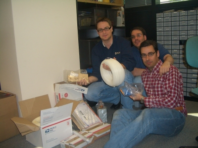
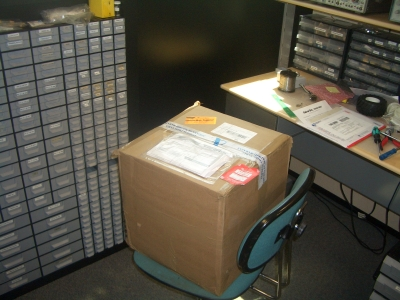
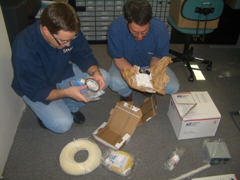
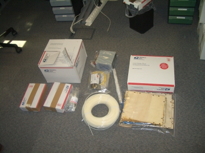
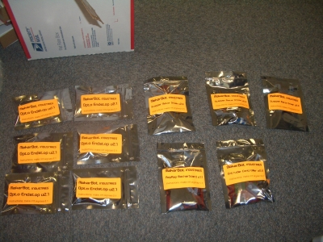
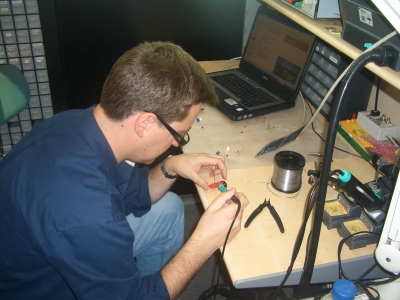
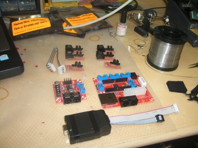

Ayer nos llegó la Reprap que habíamos encargado a mediados de Marzo. En realidad es una variante de la Reprap original, que se llama Cupcake, realizada por MakerBots Industries.

Este es el paquete que recibimos. Llegó a Flir y rápidamente Andrés me llamó. Dejé todo lo que estaba haciendo para ir corriendo a verla.

Lo primero que hicimos fue abrirlo y empezar a ver todo lo que traía. ¡Estábamos emocionados! En la foto están Ricardo y Andrés desembalando todos los componentes.

En esta foto está todo el contenido que nos ha llegado. Está el plástico para las impresiones 3D, las piezas de la máquina, los tornillos y tuercas, una fuente ATX para la alimentación, cables, la electrónica, los tres motores paso a paso, el inyector y una caja con extra de plástico que pedimos aparte.
El kit es muy completo, sin embargo es difícil de montar. Nos va a llevar bastante tiempo ponerlo en marcha. Sobre todo porque la electrónica viene sin soldar. Así que hay que montarse las placas y probarlas. Este kit todavía no está dirigido a usuarios corrientes.

Estas son todas las bolsas con los PCBs y los componentes de las placas. En total hay que montar 12 placas: la placa madre con el micro ATMEGA 6440 de Atmel, tres controladoras de los motores paso a paso, la controladora del inyector, 6 plaquitas con los topes final de carrera y el grabador de los Atmel.

Así que nos pusimos manos a la obra. Aquí se puede ver a Andrés soldando. Uno de los inconvenientes es que muchas de las placas tienen componentes SMD por lo que son más difíciles de soldar y literalmente te dejas los ojos.

Ya tenemos soldada la placa madre, las 6 de los optoacopladores, una de las controladoras de los motores paso a paso y el grabador del Atmel. Antes de continuar, hay que probarlas, así que hay que empezar a instalar el software, grabar el bootloader y el firmware en la placa base y solucionar los problemas que aparezcan.
Como mola, yo la verdad es que a las impresoras 3D veo que les falta algo para madurar ( y bajar el precio tambien) pero aun asi creo que en menos de un lustro, tendremos unas impresoras en 3D con unas caracteristicas que no hara falta ni cojer el taladro
Que envidia!!! yo quiero!
Bueno, me temo que tendre que ir a haceros una visita a IFARA en cuanto llegue a Madrid para que me la enseñéis…
Vaya hombre, pensaba que venía lista para hacerla funcionar. En cualquier caso, qué jodíos, cómo mola 😀
Un abrazo.
Sí, es una pena. Yo sabía que venía desmontada, pero no sabía que también había que soldarse las placas. Eso nos retrasará bastante, pero bueno. Estamos todos deseando ponerla en marcha 🙂
Felicitaciones por vuestra compra, yo tambien quiero una Rep Rap, espero ver mas videos vuestros con cosas que hayais impreso!! Gracias.